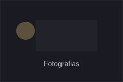
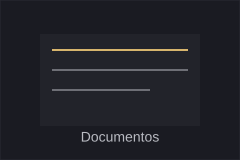
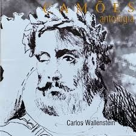
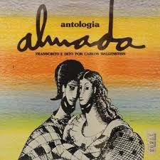
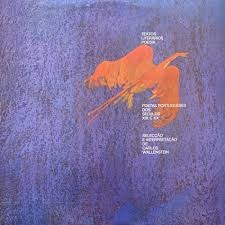

Arquivo Multimédia
Fotografias, documentos, áudio e vídeo.
Explorar
Use as categorias para navegar pelo acervo.


Áudio & Vídeo
Entrevistas, excertos teatrais, teatro radiofónico, registos audiovisuais.
Ver áudio e vídeo →Discos de poesia
Carlos Wallenstein gravou, em 1973–74, três discos de poesia, editados em vinil pela Sassetti e depois reeditados em CD (Strauss e Companhia Nacional de Música) (ver Cronologia), e há também um excerto em vídeo. Ouça as gravações nas ligações abaixo.

Disco
Camões — Antologia
Leitura e interpretação de poemas de Camões por Carlos Wallenstein.


Vídeo
Almada Negreiros — Aqui Cáucaso
Excerto de Aqui Cáucaso, de Almada Negreiros, dito por Carlos Wallenstein: um exemplo da sua arte de declamar.
Hoje os discos já não se encontram nas lojas, apenas em plataformas digitais e em vendas particulares. As gravações estão alojadas no YouTube; este site apenas liga para elas. Capas: reprodução das edições originais, direitos reservados aos respectivos titulares.
Televisão e entrevistas
RTP1 · 26 de Outubro de 1978
RTP Arquivos, Perfil: Carlos Wallenstein
Programa da série Perfil com o actor Carlos Wallenstein, sobre o seu perfil, o interesse pelo teatro e o teatro em Portugal. Autoria de Alexandre O’Neill e Rui de Brito; realização de Jaime de Brito.
O vídeo está alojado em RTP Arquivos, a cujos titulares pertencem os direitos de imagem e de emissão.
Fundação Calouste Gulbenkian · 1972
A importância do Teatro Popular
Entrevista de Carlos Wallenstein, no âmbito da representação do Auto da Floripes nos jardins da Fundação Calouste Gulbenkian, em 1972. Partilhada pelo Núcleo Promotor do Auto da Floripes 5 de Agosto, a 5 de Novembro de 2019.
O vídeo está alojado na página do Núcleo Promotor do Auto da Floripes; a origem da gravação original por identificar.
Contribua para o Arquivo
Tem fotografias, documentos, programas, testemunhos ou registos audiovisuais relacionados com Carlos Wallenstein? Veja o que procuramos e escreva-nos para carloswallenstein100 [arroba] gmail [ponto] com.
- Indique, sempre que possível, quem aparece, a data, o local e o autor.
- Diga se autoriza a publicação e em que condições.
- Para ficheiros grandes, envie uma ligação (Drive, WeTransfer ou semelhante).
Arquivo de Imprensa
Em construção. Já pode ver o artigo de Mário Vieira de Carvalho no Diário de Lisboa (1988) em Documentos. Procuramos outras notícias, recortes e reportagens sobre Carlos Wallenstein e sobre o centenário, em especial o artigo «Wallenstein I», de Eugénia Vasques, no Expresso de 4 de Novembro de 2000. Se conhecer algum, diga-nos.